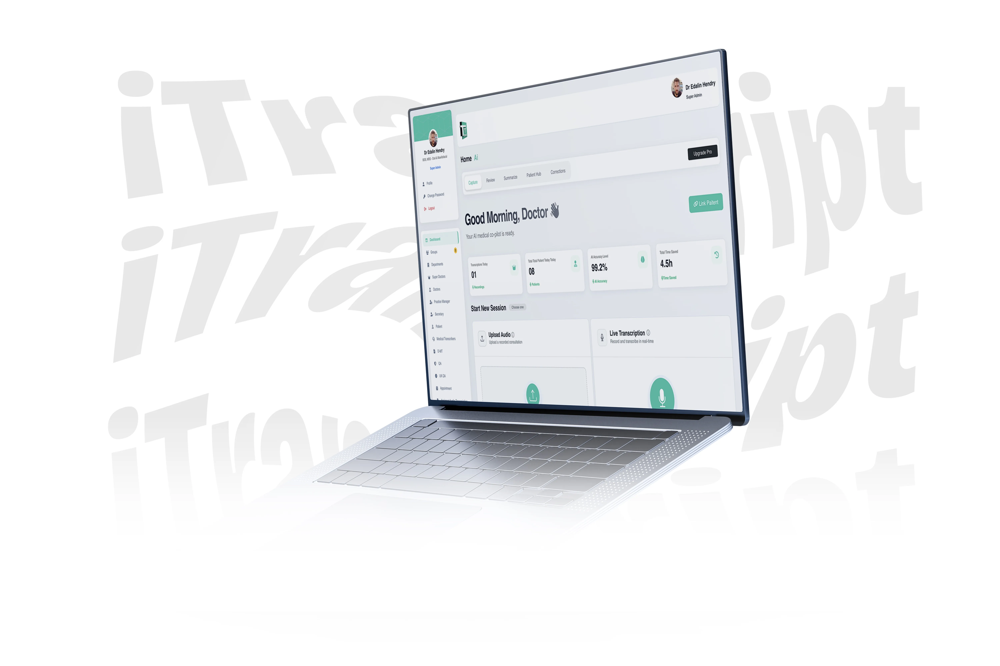
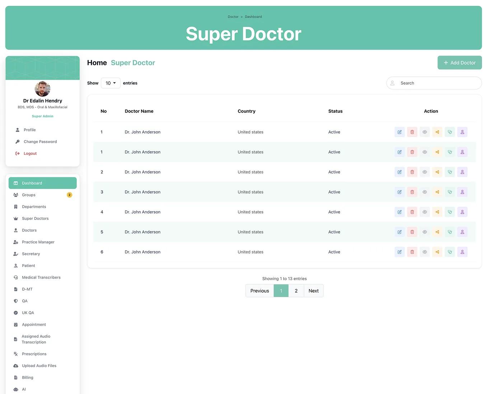
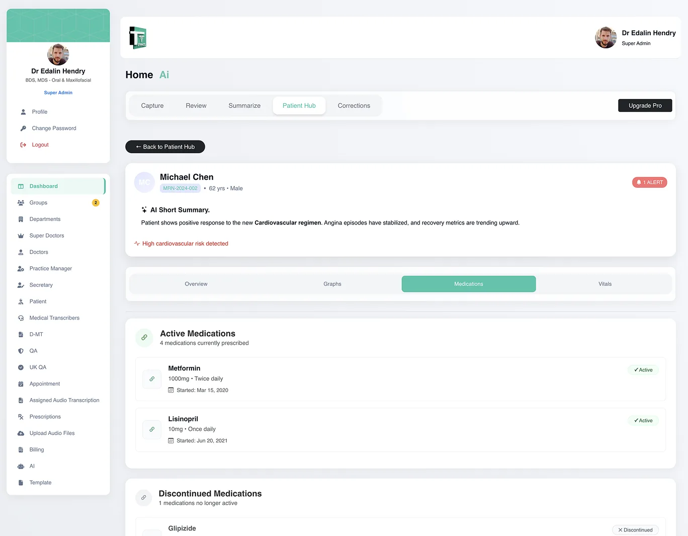
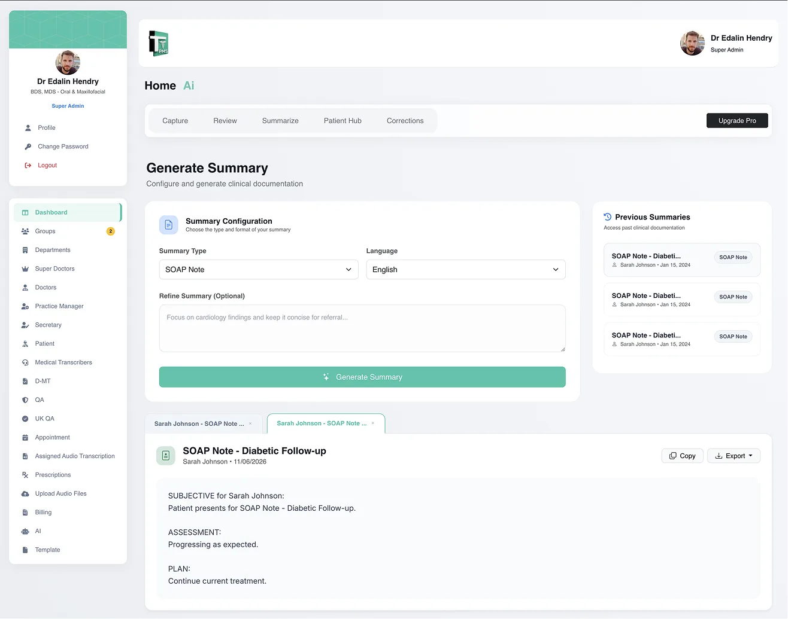
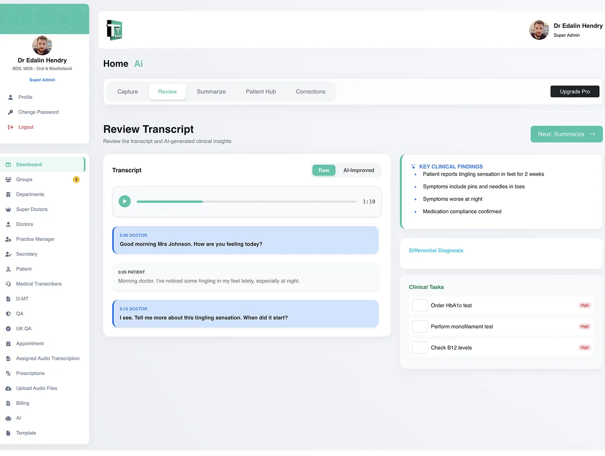
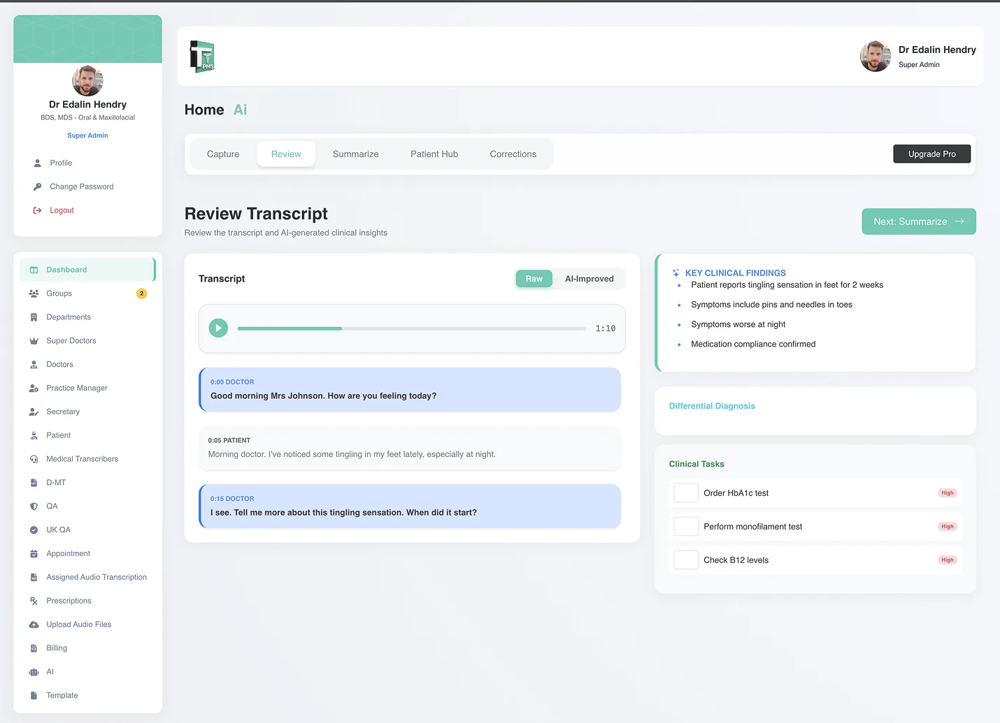
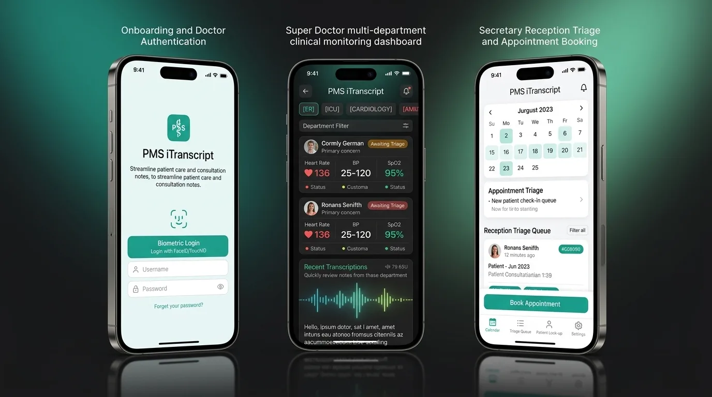
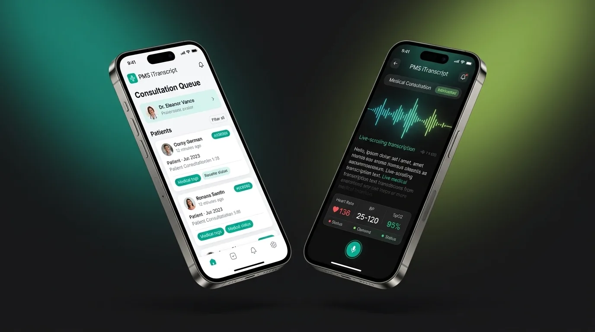

How I redesigned the user experience and frontend architecture for PMS iTranscript360 — simplifying complex outpatient consultation queues, active vitals telemetry, ambient speech transcription review, and multi-role clinic permissions into an accessible, low-cognitive-load interface.

Practice Management Systems (PMS) serve as the operational backbone for outpatient clinics, General Practitioner surgeries, and hospital departments. PMS iTranscript360 was built to bridge the gap between administrative scheduling, patient triage, ambient doctor-patient transcription, and direct electronic health record documentation.
Enterprise systems, cloud data pipelines, and compliance operations managed by the iTranscript360 engineering and medical operations team:
My direct hands-on responsibilities focusing on user experience architecture, visual design, and client-side implementation:
The live production gateway at pms.itranscript360.com/login is restricted to authenticated medical personnel under strict HIPAA, NHS Digital, and GDPR data protection regulations. To preserve patient confidentiality and clinical security, the screens and workflows documented in this case study represent verified design deliverables, high-fidelity Figma components, and synthetic anonymized demonstration datasets created during my design and frontend implementation scope.
Clinical software operates in high-stress, time-sensitive environments. During my audit of the legacy interface and healthcare requirements, I identified four critical UX challenges that directly impacted clinician focus and documentation efficiency.
The legacy clinic queue displayed patient names, appointment slots, triage severity, and encounter status in cramped, unformatted rows that blurred together on standard clinic monitors.
Desk nurses and doctors manage dozens of patients daily. If visual hierarchy is weak, urgent triage flags are missed and patient check-in times increase.
I structured a high-contrast tabular queue with clear column alignment, distinct color-coded triage chips, quick-filter tabs, and prominent status pills for immediate scannability.
Patient vitals (Blood Pressure, SpO2, Heart Rate) and medication dosages were displayed using proportional typography where numbers had varying widths, making quick visual scanning prone to error.
In clinical care, misinterpreting numbers (e.g. 10mg vs 100mg, or reading a systolic jump incorrectly) can directly endanger patient safety.
I standardized clinical data on tabular numerals using Plus Jakarta Sans and JetBrains Mono, paired with explicit unit labels, cardiovascular risk alert badges, and high-contrast cards.
Clinicians were forced to switch between separate screens to listen to consultation recordings, type notes, verify past patient encounters, and sign off documents.
Context switching between disconnected popups slowed encounter completion and forced doctors into evening documentation sessions at home.
I engineered an ergonomic tri-pane layout: patient queue on the left, audio waveform & diarized speech in the center, and structured SOAP note fields (Subjective, Objective, Assessment, Plan) on the right with 1-click sign-off.
Attending physicians, triage nurses, medical transcriptionists, and clinic billing staff were using divergent, ad-hoc interfaces with inconsistent buttons and navigation schemes.
Staff rotating between roles faced steep learning curves, while hospital IT administrators struggled to enforce role-based access governance.
I established a unified role-based permissions matrix sharing a single core component system—adapting displayed tools dynamically based on user role while maintaining identical visual patterns.
Mapping the verified progression from initial patient check-in to finalized medical record delivery inside the PMS iTranscript360 ecosystem.
Clinicians and staff log in via secure gateway (pms.itranscript360.com/login) with role-scoped permissions.
Triage staff log blood pressure, SpO2, and allergies. The active outpatient roster updates with triage priority badges.
Step 02 · TriageDoctor conducts encounter. Audio is captured via live microphone HUD or uploaded as an encrypted consultation file.
Step 03 · Audio HUDConsultation is converted into structured SOAP format with diarized dialogue (Doctor vs. Patient) and task prompts.
Step 04 · SOAP DraftAttending doctor reviews, refines, and signs with 1-click. Finalized record pushes into hospital EHR systems via HL7/FHIR.
Step 05 · EHR SyncHere is the step-by-step methodology I followed to take PMS iTranscript360 from workflow audit to high-fidelity interface design and responsive frontend code.
I analyzed the patient visit journey from waiting room check-in to encounter sign-off. I documented friction points: nested modal dialogs, fragmented patient charts, confusing table columns, and low-contrast typography that slowed clinical decision-making.
I restructured the interface around a single-pane architectural model: (1) Collapsible Outpatient Queue & Patient Search on the left, (2) Active Encounter Audio HUD & Diarized Transcript in the center, and (3) Structured SOAP Documentation & Action Plan on the right.
I engineered a healthcare design system tailored for medical monitors: high-contrast navy headings, calm medical teal interactive states, tabular numerals for blood pressure and SpO2 telemetry, and clear visual chips for allergies and triage status.
I translated the Figma designs into production-ready frontend code using semantic HTML5, CSS Grid with custom properties, and zero heavy UI libraries. I built interactive features like the image lightbox, reading progress bar, and responsive drawer in lightweight vanilla JavaScript.
I validated the interface against WCAG 2.1 AA contrast requirements, ensured touch targets met the minimum 44×44px standard for hospital tablet rounds, and verified layout resilience across desktop, tablet, and mobile viewports.
Click any screen to open the high-resolution lightbox modal. Each screen represents genuine design deliverables and production layouts created for the PMS iTranscript360 platform.

Launch active patient consultations, initiate live ambient microphone recording, or upload dictation files for instant clinical synthesis.
Positioned daily encounter counters in high-contrast cards, provided immediate drag-and-drop audio zones, and established a direct patient linking selector.

Review the daily outpatient queue, check patient arrival timestamps, verify assigned clinician, and open encounter records with zero lag.
Designed clear tabular rows with alternating hover states, monospace Medical Record Numbers (MRN), and color-coded status badges (Active, In-Consultation, Completed).

Examine patient chart, review active prescriptions, verify cardiovascular risk status, and compare treatment response over successive quarters.
Separated active vs. discontinued drugs in clean tabular cards with strict tabular dosage numbers (Metformin 1000mg BID, Lisinopril 10mg QD) and high-visibility allergy banners.

Generate, review, and edit structured encounter documentation adhering to clinical SOAP methodology (Subjective, Objective, Assessment, Plan).
Provided dedicated expandable text sections for each clinical SOAP dimension, integrated custom prompt directives for specialty referrals, and enabled 1-click hospital EHR export.

Review recorded consultation audio with synchronized speech text, identify speakers, and verify extracted clinical follow-up tasks.
Engineered color-differentiated dialogue speech bubbles (Doctor vs. Patient), integrated a synchronized audio waveform scrubber, and surfaced automated diagnostic task orders.

Review executive clinical summary, verify treatment plan directives, and execute electronic signature for hospital EHR write-back.
Presented key diagnostic findings in structured bullet points, added prominent electronic signature verification stamps, and designed clear PDF/EHR push buttons.

Configure granular permissions for Attending Physicians, Triage Nurses, Medical Transcriptionists, and Medical Coders under HIPAA compliance.
Designed role-specific toolbars and data visibility filters while maintaining a single cohesive UI shell, ensuring staff only access patient data relevant to their role.

Review outpatient queue status, check patient vitals, and capture voice encounters directly at the bedside during hospital ward rounds.
Engineered large touch targets (≥48px), high-contrast cards resistant to fluorescent glare, and thumb-friendly navigation optimized for handheld iOS and Android devices.
Extracted directly from the implementation files and Figma tokens, this system balances high clinical data density with effortless visual calm for high-pressure medical environments.
Contemporary, high-character grotesque typeface featuring tight tracking, distinct apertures, and editorial warmth suited for clinical authority.
Geometric sans-serif with tall x-height, clear numeric glyphs, and exceptional legibility across dense medical reports and tabular data screens.
To ensure sub-second rendering speeds on clinic workstations and low-latency response during hospital ward rounds, I engineered the client-side code using native web standards without bulky third-party libraries.
Structured using native semantic landmarks (<header>, <nav>, <main>, <section>, <article>, <footer>) for clean document hierarchy, search indexing, and screen reader accessibility.
Engineered using CSS Custom Properties for theme tokens, CSS Grid with repeat(auto-fit, minmax(...)) for fluid card layouts, and responsive media queries at 1024px and 768px breakpoints.
Implemented client-side interactions in clean vanilla JavaScript: interactive full-screen image lightbox modal, reading progress indicator, and accessible mobile drawer toggle with touch gesture dismissal.
Prioritizing verified design outcomes and realistic clinical software learnings over fabricated statistics.
Command Center, Queue HUD, Patient Chart, SOAP Workspace, Review HUD, Summary, Roles, and Mobile.
Complete color tokens, typography scales, table row components, and triage status pills in Figma.
Handcrafted HTML5, modern CSS Grid/Flexbox, and vanilla JavaScript verified across viewports.
Verified contrast ratios exceeding 4.5:1 for body and 7:1 for headings across all interfaces.
Designing PMS iTranscript360 reinforced that in clinical software, visual calm is a medical necessity. Clinicians under high cognitive stress do not want visual novelty; they require speed, predictable navigation, and unambiguous data hierarchy.
A strong design portfolio acknowledges real-world project boundaries rather than manufacturing fictional results: